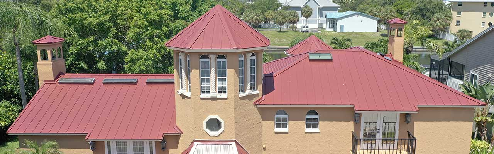
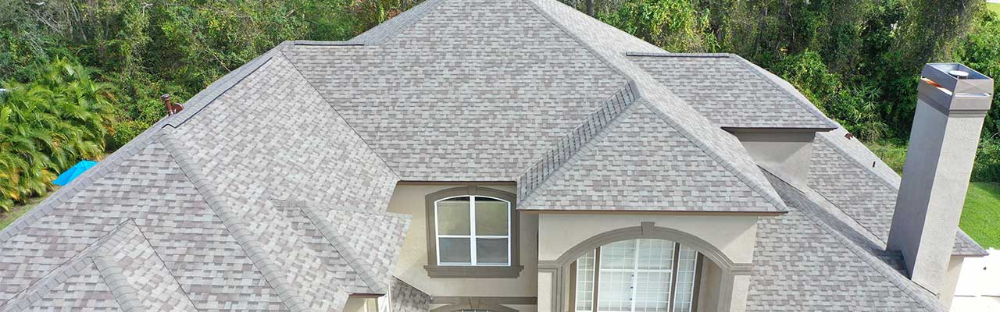

Roofing repairs and replacements
- Shingle, tile, and metal roofing support
- Leak diagnosis and structural correction
- Clear next steps for each project scope
Owner-led Roofing. Trust-first conversion.
KAM Roofing Services is built for Pinellas homeowners and businesses who need durable roofing, direct communication, and confident proof of quality. This page shows your best assets first: ownership identity, service clarity, review proof, and direct access to estimates.

Every inquiry lands on a direct call path, no hidden form funnels. KAM confirms scope and next actions with the owner-led team.
Licensed/insured and review proof links are visible where visitors decide. We keep trust cues near the top, not buried.
Visitors can verify real reviews directly from the site without leaving confidence behind.

KAM is not a brand detached from people. Kyle leads service and client accountability with an emphasis on trust signals that matter to homeowners — direct access, clear updates, and public proof.
"Great communication and clean execution. Fastest part for us was the callback and accountability once the scope was shared."
"We value the clear review links and licensing visibility. It helps me know this is a business I can trust."
"Facebook updates and review pages stay useful when the proof is visible and easy to check."
Facebook: KAM Roofing Services
Start with one action: call the owner and get a direct project path.